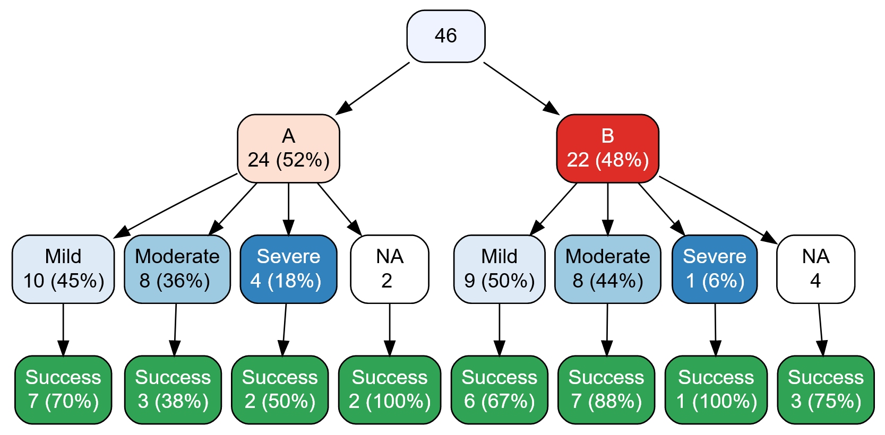

library(easystats) # make stats easy again
library(tidyverse) # data wrangling
library(tableone) # tables
library(rstanarm) # optional!
library(rio) # import/export data, eg., to excel3 Exploratory Data Analysis

3.1 R packages needed for this chapter
3.2 What’s EDA?
Exploratory Data Analysis (EDA) is a procedure to scrutinize a dataset at hand in order learn about it. EDA comprises descriptive statistics, data visualization and data transformation techniques (such as dimension reduction).
It’s not so mathematical deep as modelling, but in practice it’s really important.
There’s this famous saying:
In Data Science, 80% of time spent prepare data, 20% of time spent complain about the need to prepare data.
EDA can roughly be said to comprise the following parts:
- Importing (and exporting) data
- Data cleansing (such as deal with missing data etc)
- Data transformation or “wrangling” (such as long to wide format)
- Computing desriptive statistics (such as the notorious mean)
- Analyzing distributions (is it normal?)
- Finding patterns in data (aka data mining)
- More complex data transformation techniques (such as factor analysis)
3.3 Data journey
Wickham and Grolemund (2016) present a visual sketch of what could be called the “data journey”, i.e., the steps we are taking in order to learn from data, seen from an hands-on angle, see Figure 3.1.

3.4 Blitz data
See Section 2.5 for some data sets suitable to get going.
3.5 Data cleansing
The R package {janitor} provides some nice stuff for data cleansing. Check out this case study.
3.6 Convenience functions
There a quite a few functions (residing in some packages) that help you doing EDA from a helicoptor point of view. In other words, you do not have to pay attention to nitty-gritty details, the function will do that for you. This is approach is, well, convenient, but of course comes at a price. You will not have a great amount of choice and influence on the way the data is analyzed and presented.
3.6.1 Data Explorer
There are many systems and approaches to explore data. One particular interesting system is the R-package DataExplorer.

Check it out on its Githup page.
3.6.2 vtree
A bit similar to {DataExplorer}, the R package {vtree} helps to explore visually datasets.

3.6.3 The easystats way
There are some packages, such as {easystats}, which provide comfortable access to basic statistics:
library(easystats) # once per session
describe_distribution(mtcars)| Variable | Mean | SD | IQR | Min | Max | Skewness | Kurtosis | n | n_Missing |
|---|---|---|---|---|---|---|---|---|---|
| mpg | 20.090625 | 6.0269481 | 7.52500 | 10.400 | 33.900 | 0.6723771 | -0.0220063 | 32 | 0 |
| cyl | 6.187500 | 1.7859216 | 4.00000 | 4.000 | 8.000 | -0.1922609 | -1.7627939 | 32 | 0 |
| disp | 230.721875 | 123.9386938 | 221.52500 | 71.100 | 472.000 | 0.4202331 | -1.0675234 | 32 | 0 |
| hp | 146.687500 | 68.5628685 | 84.50000 | 52.000 | 335.000 | 0.7994067 | 0.2752116 | 32 | 0 |
| drat | 3.596563 | 0.5346787 | 0.84000 | 2.760 | 4.930 | 0.2927802 | -0.4504325 | 32 | 0 |
| wt | 3.217250 | 0.9784574 | 1.18625 | 1.513 | 5.424 | 0.4659161 | 0.4165947 | 32 | 0 |
| qsec | 17.848750 | 1.7869432 | 2.02250 | 14.500 | 22.900 | 0.4063466 | 0.8649307 | 32 | 0 |
| vs | 0.437500 | 0.5040161 | 1.00000 | 0.000 | 1.000 | 0.2645418 | -2.0632731 | 32 | 0 |
| am | 0.406250 | 0.4989909 | 1.00000 | 0.000 | 1.000 | 0.4008089 | -1.9665503 | 32 | 0 |
| gear | 3.687500 | 0.7378041 | 1.00000 | 3.000 | 5.000 | 0.5823086 | -0.8952916 | 32 | 0 |
| carb | 2.812500 | 1.6152000 | 2.00000 | 1.000 | 8.000 | 1.1570911 | 2.0200593 | 32 | 0 |
describe_distribution provides us with an overview on typical descriptive summaries.
For nominal variables, consider data_tabulate:
data_tabulate(mtcars, select = c("am", "vs"))am (am) <numeric>
# total N=32 valid N=32
Value | N | Raw % | Valid % | Cumulative %
------+----+-------+---------+-------------
0 | 19 | 59.38 | 59.38 | 59.38
1 | 13 | 40.62 | 40.62 | 100.00
<NA> | 0 | 0.00 | <NA> | <NA>
vs (vs) <numeric>
# total N=32 valid N=32
Value | N | Raw % | Valid % | Cumulative %
------+----+-------+---------+-------------
0 | 18 | 56.25 | 56.25 | 56.25
1 | 14 | 43.75 | 43.75 | 100.00
<NA> | 0 | 0.00 | <NA> | <NA>We can also get grouped tabulations, which amounts to something similar to a contingency table:
mtcars %>%
group_by(am) %>%
data_tabulate(select = "vs", collapse = TRUE)# Frequency Table
Variable | Group | Value | N | Raw % | Valid % | Cumulative %
---------+--------+-------+----+-------+---------+-------------
vs | am (0) | 0 | 12 | 63.16 | 63.16 | 63.16
| | 1 | 7 | 36.84 | 36.84 | 100.00
| | <NA> | 0 | 0.00 | <NA> | <NA>
---------+--------+-------+----+-------+---------+-------------
vs | am (1) | 0 | 6 | 46.15 | 46.15 | 46.15
| | 1 | 7 | 53.85 | 53.85 | 100.00
| | <NA> | 0 | 0.00 | <NA> | <NA>
---------------------------------------------------------------Checkout the function reference of your favorite package in order to learn what’s on the shelf. For example, here’s the function reference site of datawizard, one of the packages in the easystats ecosystem.
3.6.4 TableOne
The R package {tableOne} provides something like the typical “Table One” in many papers.
From the homepage:
The tableone package is an R package that eases the construction of “Table 1”, i.e., patient baseline characteristics table commonly found in biomedical research papers. The packages can summarize both continuous and categorical variables mixed within one table. Categorical variables can be summarized as counts and/or percentages. Continuous variables can be summarized in the “normal” way (means and standard deviations) or “nonnormal” way (medians and interquartile ranges).
penguins <- read.csv("https://vincentarelbundock.github.io/Rdatasets/csv/palmerpenguins/penguins.csv")It’s quite simple to use:
CreateTableOne(data = penguins)
Overall
n 344
X (mean (SD)) 172.50 (99.45)
species (%)
Adelie 152 (44.2)
Chinstrap 68 (19.8)
Gentoo 124 (36.0)
island (%)
Biscoe 168 (48.8)
Dream 124 (36.0)
Torgersen 52 (15.1)
bill_length_mm (mean (SD)) 43.92 (5.46)
bill_depth_mm (mean (SD)) 17.15 (1.97)
flipper_length_mm (mean (SD)) 200.92 (14.06)
body_mass_g (mean (SD)) 4201.75 (801.95)
sex = male (%) 168 (50.5)
year (mean (SD)) 2008.03 (0.82) To get more detailled results, use the summary method:
tab1 <- CreateTableOne(data = penguins)
summary(tab1)
### Summary of continuous variables ###
strata: Overall
n miss p.miss mean sd median p25 p75 min max skew
X 344 0 0.0 172 99.4 172 87 258 1 344 0.00
bill_length_mm 344 2 0.6 44 5.5 44 39 48 32 60 0.05
bill_depth_mm 344 2 0.6 17 2.0 17 16 19 13 22 -0.14
flipper_length_mm 344 2 0.6 201 14.1 197 190 213 172 231 0.35
body_mass_g 344 2 0.6 4202 802.0 4050 3550 4750 2700 6300 0.47
year 344 0 0.0 2008 0.8 2008 2007 2009 2007 2009 -0.05
kurt
X -1.2
bill_length_mm -0.9
bill_depth_mm -0.9
flipper_length_mm -1.0
body_mass_g -0.7
year -1.5
=======================================================================================
### Summary of categorical variables ###
strata: Overall
var n miss p.miss level freq percent cum.percent
species 344 0 0.0 Adelie 152 44.2 44.2
Chinstrap 68 19.8 64.0
Gentoo 124 36.0 100.0
island 344 0 0.0 Biscoe 168 48.8 48.8
Dream 124 36.0 84.9
Torgersen 52 15.1 100.0
sex 344 11 3.2 female 165 49.5 49.5
male 168 50.5 100.0
3.7 Tidyverse
3.7.1 Intro to the tidyverse
The Tidyverse is probably the R thing with the most publicity. And it’s great. It’s a philosophy baken into an array of R packages. Perhaps central is the idea that a lot of little lego pieces, if fitting nicely together, provides a simple yet flexibel and thus powerful machinery.
There’s a lot of introctory material to the tidyverse around for instance, so I’m not repeating that here.
3.7.2 More advanced tidyverse
3.7.2.1 Repeat a function over many columns
At times, we would like to compute the same functions for many variables, ie columns for tidyverse applications.
Let’s load the penguins data for illustration.
d <- read_csv("https://vincentarelbundock.github.io/Rdatasets/csv/palmerpenguins/penguins.csv")
head(d)| …1 | species | island | bill_length_mm | bill_depth_mm | flipper_length_mm | body_mass_g | sex | year |
|---|---|---|---|---|---|---|---|---|
| 1 | Adelie | Torgersen | 39.1 | 18.7 | 181 | 3750 | male | 2007 |
| 2 | Adelie | Torgersen | 39.5 | 17.4 | 186 | 3800 | female | 2007 |
| 3 | Adelie | Torgersen | 40.3 | 18.0 | 195 | 3250 | female | 2007 |
| 4 | Adelie | Torgersen | NA | NA | NA | NA | NA | 2007 |
| 5 | Adelie | Torgersen | 36.7 | 19.3 | 193 | 3450 | female | 2007 |
| 6 | Adelie | Torgersen | 39.3 | 20.6 | 190 | 3650 | male | 2007 |
Say, we would like to compute the mean value for each numeric variable in the data set:
d %>%
summarise(across(bill_length_mm:body_mass_g, mean, na.rm = TRUE))| bill_length_mm | bill_depth_mm | flipper_length_mm | body_mass_g |
|---|---|---|---|
| 43.92193 | 17.15117 | 200.9152 | 4201.754 |
Synonymously, we could write:
d %>%
summarise(across(where(is.numeric), ~ mean(.x, na.rm = TRUE)))| …1 | bill_length_mm | bill_depth_mm | flipper_length_mm | body_mass_g | year |
|---|---|---|---|---|---|
| 172.5 | 43.92193 | 17.15117 | 200.9152 | 4201.754 | 2008.029 |
Say, we would like to compute the z-value of each numeric variable.
Addmittedly, easystats makes it quite simple:
d %>%
standardise(select = is.numeric) %>%
head()| …1 | species | island | bill_length_mm | bill_depth_mm | flipper_length_mm | body_mass_g | sex | year |
|---|---|---|---|---|---|---|---|---|
| -1.724511 | Adelie | Torgersen | -0.8832047 | 0.7843001 | -1.4162715 | -0.5633167 | male | -1.257484 |
| -1.714456 | Adelie | Torgersen | -0.8099390 | 0.1260033 | -1.0606961 | -0.5009690 | female | -1.257484 |
| -1.704400 | Adelie | Torgersen | -0.6634077 | 0.4298326 | -0.4206603 | -1.1867934 | female | -1.257484 |
| -1.694345 | Adelie | Torgersen | NA | NA | NA | NA | NA | -1.257484 |
| -1.684289 | Adelie | Torgersen | -1.3227986 | 1.0881294 | -0.5628905 | -0.9374027 | female | -1.257484 |
| -1.674234 | Adelie | Torgersen | -0.8465718 | 1.7464261 | -0.7762357 | -0.6880121 | male | -1.257484 |
See the help page of standardise for mor details on how to select variables and on more options.
But for the purpose of illustration, let’s do it with more simple means, i.e. tidyverse only.
d %>%
transmute(across(bill_length_mm:body_mass_g,
.fns = ~ {(.x - mean(.x, na.rm = TRUE)) / sd(.x, na.rm = TRUE)},
.names = "{.col}_z")) %>%
head()| bill_length_mm_z | bill_depth_mm_z | flipper_length_mm_z | body_mass_g_z |
|---|---|---|---|
| -0.8832047 | 0.7843001 | -1.4162715 | -0.5633167 |
| -0.8099390 | 0.1260033 | -1.0606961 | -0.5009690 |
| -0.6634077 | 0.4298326 | -0.4206603 | -1.1867934 |
| NA | NA | NA | NA |
| -1.3227986 | 1.0881294 | -0.5628905 | -0.9374027 |
| -0.8465718 | 1.7464261 | -0.7762357 | -0.6880121 |
It’s maybe more succint to put the z-value computation in its function, and then just apply this function:
z_stand <- function(x){
(x - mean(x, na.rm = TRUE)) / sd(x, na.rm = TRUE)
}d2 <-
d %>%
mutate(across(bill_length_mm:body_mass_g,
.fns = z_stand))
d2 %>%
glimpse()Rows: 344
Columns: 9
$ ...1 <dbl> 1, 2, 3, 4, 5, 6, 7, 8, 9, 10, 11, 12, 13, 14, 15, 1…
$ species <chr> "Adelie", "Adelie", "Adelie", "Adelie", "Adelie", "A…
$ island <chr> "Torgersen", "Torgersen", "Torgersen", "Torgersen", …
$ bill_length_mm <dbl> -0.8832047, -0.8099390, -0.6634077, NA, -1.3227986, …
$ bill_depth_mm <dbl> 0.78430007, 0.12600328, 0.42983257, NA, 1.08812936, …
$ flipper_length_mm <dbl> -1.4162715, -1.0606961, -0.4206603, NA, -0.5628905, …
$ body_mass_g <dbl> -0.563316704, -0.500969030, -1.186793445, NA, -0.937…
$ sex <chr> "male", "female", "female", NA, "female", "male", "f…
$ year <dbl> 2007, 2007, 2007, 2007, 2007, 2007, 2007, 2007, 2007…3.7.2.2 Rowwise operations
For technical reasons, it’s a bit cumbersome in (base) R to compute rowwise operations. The thing is, R’s dataframes are organized as vectors of columns so it’s much easier to do stuff columnwise.
However, since recently, computing rowwise operations with the tidyverse has become simpler. Consider the following example. Say we would like to know the highest z-value for each variable we just computed, that is the highest values per individual, ie., by row in the data frame.
d2 %>%
drop_na() %>%
rowwise() %>%
mutate(max_z = max(c(bill_length_mm, bill_depth_mm, flipper_length_mm, body_mass_g))) %>%
head()| …1 | species | island | bill_length_mm | bill_depth_mm | flipper_length_mm | body_mass_g | sex | year | max_z |
|---|---|---|---|---|---|---|---|---|---|
| 1 | Adelie | Torgersen | -0.8832047 | 0.7843001 | -1.4162715 | -0.5633167 | male | 2007 | 0.7843001 |
| 2 | Adelie | Torgersen | -0.8099390 | 0.1260033 | -1.0606961 | -0.5009690 | female | 2007 | 0.1260033 |
| 3 | Adelie | Torgersen | -0.6634077 | 0.4298326 | -0.4206603 | -1.1867934 | female | 2007 | 0.4298326 |
| 5 | Adelie | Torgersen | -1.3227986 | 1.0881294 | -0.5628905 | -0.9374027 | female | 2007 | 1.0881294 |
| 6 | Adelie | Torgersen | -0.8465718 | 1.7464261 | -0.7762357 | -0.6880121 | male | 2007 | 1.7464261 |
| 7 | Adelie | Torgersen | -0.9198375 | 0.3285561 | -1.4162715 | -0.7191859 | female | 2007 | 0.3285561 |
3.8 Exporting to Office
3.8.1 Excel
The most straightforward approach is to convince your EDA function to produce a data frame. Data frames can be written as CSV or XLSX to disk, and then easily imported to office packages.
easystats and tidyverse are two examples where this happens.
df1 <- describe_distribution(mtcars)Now, df1 is a data frame:
str(df1)Classes 'parameters_distribution', 'see_parameters_distribution' and 'data.frame': 11 obs. of 10 variables:
$ Variable : chr "mpg" "cyl" "disp" "hp" ...
$ Mean : num 20.09 6.19 230.72 146.69 3.6 ...
$ SD : num 6.027 1.786 123.939 68.563 0.535 ...
$ IQR : num 7.53 4 221.53 84.5 0.84 ...
$ Min : num 10.4 4 71.1 52 2.76 ...
$ Max : num 33.9 8 472 335 4.93 ...
$ Skewness : num 0.672 -0.192 0.42 0.799 0.293 ...
$ Kurtosis : num -0.022 -1.763 -1.068 0.275 -0.45 ...
$ n : int 32 32 32 32 32 32 32 32 32 32 ...
$ n_Missing: int 0 0 0 0 0 0 0 0 0 0 ...
- attr(*, "object_name")= chr "mtcars"
- attr(*, "threshold")= num 0.1Let’s export as XLSX (via the R package rio) and as CSV:
export(df1, file = "df1.xlsx")
export(df1, file = "df1.csv")For exporting csv files we could also use write_csv() from the tidyverse or write.csv from base R.
df2 <- data_tabulate(mtcars$am)
str(df2)Classes 'dw_data_tabulate' and 'data.frame': 3 obs. of 6 variables:
$ Variable : chr "mtcars$am" "mtcars$am" "mtcars$am"
$ Value : Factor w/ 2 levels "0","1": 1 2 NA
$ N : int 19 13 0
$ Raw % : num 59.4 40.6 0
$ Valid % : num 59.4 40.6 NA
$ Cumulative %: num 59.4 100 NA
- attr(*, "type")= chr "numeric"
- attr(*, "object")= chr "mtcars$am"
- attr(*, "duplicate_varnames")= logi [1:3] FALSE TRUE TRUE
- attr(*, "total_n")= int 32
- attr(*, "valid_n")= int 32export(df2, file = "df2.csv")Note that if we use data_tabulate like this:
df3 <- data_tabulate(mtcars, select = c("am", "vs"))
df3 %>% str()List of 2
$ :Classes 'dw_data_tabulate' and 'data.frame': 3 obs. of 6 variables:
..$ Variable : chr [1:3] "am" "am" "am"
..$ Value : Factor w/ 2 levels "0","1": 1 2 NA
..$ N : int [1:3] 19 13 0
..$ Raw % : num [1:3] 59.4 40.6 0
..$ Valid % : num [1:3] 59.4 40.6 NA
..$ Cumulative %: num [1:3] 59.4 100 NA
..- attr(*, "type")= chr "numeric"
..- attr(*, "varname")= chr "am"
..- attr(*, "object")= chr "am"
..- attr(*, "duplicate_varnames")= logi [1:3] FALSE TRUE TRUE
..- attr(*, "total_n")= int 32
..- attr(*, "valid_n")= int 32
$ :Classes 'dw_data_tabulate' and 'data.frame': 3 obs. of 6 variables:
..$ Variable : chr [1:3] "vs" "vs" "vs"
..$ Value : Factor w/ 2 levels "0","1": 1 2 NA
..$ N : int [1:3] 18 14 0
..$ Raw % : num [1:3] 56.2 43.8 0
..$ Valid % : num [1:3] 56.2 43.8 NA
..$ Cumulative %: num [1:3] 56.2 100 NA
..- attr(*, "type")= chr "numeric"
..- attr(*, "varname")= chr "vs"
..- attr(*, "object")= chr "vs"
..- attr(*, "duplicate_varnames")= logi [1:3] FALSE TRUE TRUE
..- attr(*, "total_n")= int 32
..- attr(*, "valid_n")= int 32
- attr(*, "class")= chr [1:2] "dw_data_tabulates" "list"
- attr(*, "collapse")= logi FALSEWe’ll get a list of two data frames.
To export either, we need to access each list list element:
export(df3[[1]], file = "df3.csv")3.8.2 Word
Obviously, once your data has arriven as a spreadsheet in Excel (or similar software packages), it’s no big deal to get it into Word processors as well.
In addition, one user gave the following recommendation on StackOverflow:
Another possible solution: The above strategy did not work for me when I had a similar issue, but it was resolved once I knitted the table1 object and opened the html in browser to copy the html table and successfully paste into word. Doing it within RStudio viewer would not work for me for some reason.
Lastly, there are options to export directly to Word or Powerpoint. The R package flextable provides functions for that purpose:
library(flextable)
my_flex_tab <- flextable(penguins)
save_as_docx("Table 1 " = my_flex_tab, path = "my_tab.docx")
save_as_pptx("Table 1 " = my_flex_tab, path = "my_tab.pptx")3.9 Case Study

Explore the palmerpenguins dataset, it’s a famous dataset made for learning data analysis.
There’s a great interactive course on EDA based on the penguins. Have a look, it’s great!
{kind=link}
3.10 Cheatsheets
There are a number of nice cheat sheets available on an array of topics related to EDA, made available by the folks at RStudio.
Consider this collection:
{kind=link}
{kind=link}
{kind=link}
{kind=link}
So much great stuff! A bit too much to digest in one go, but definitely worthwhile if you plan to dig deeper in data analysis.
3.11 Literature
Wickham and Grolemund (2016) is an highly recommendable resource in order to get a thorough understanding of data analysis using R. Note that this source is focusing on the “how to”, not so much to theoretical foundations. Ismay and Kim (2020) is a gently introduction into many steps on the data journey, including EDA.